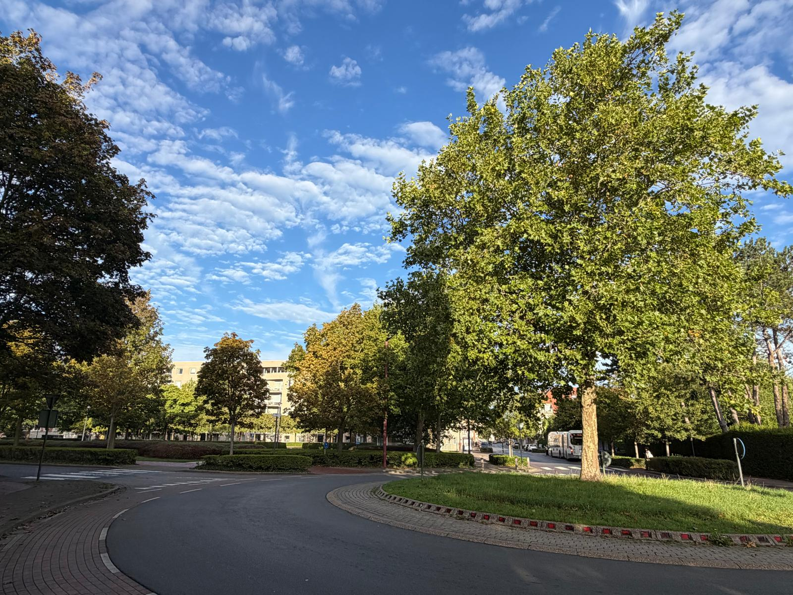

Welkom bij
praktijk Vogelzang Oostende
Praktijk Vogelzang biedt huisartsengeneeskunde, verpleegkundige zorg en kinesitherapie onder één dak.

Mededelingen
De officiële opening van praktijk Vogelzang is op 19 oktober 2026.
Dit is een eerste versie van de website. Houd de website zeker in de gaten voor verdere updates.

Patiënten wegwijs
Wie zich als patiënt bij de huisarts wil inschrijven, kan zich aanmelden via de wachtlijst. Zodra er plaats is, nemen we zelf contact met je op.
Inschrijven op de wachtlijst
Werking
Praktijk Vogelzang is een startende praktijk met een jonge, gemotiveerde huisarts, ondersteund door een verpleegkundige. Daarnaast is er ook een kinesist aanwezig in de praktijk. Op termijn hopen we de praktijk uit te breiden met bijkomende huisartsen, om zo de zorg voor de Oostendenaars op lange termijn te kunnen garanderen.
Er worden nieuwe patiënten aanvaard, met voorrang voor mensen uit de buurt of mensen die momenteel geen vaste huisarts hebben.
We starten zonder secretariaat: maak daarom bij voorkeur online een afspraak, of contacteer ons via mail. Consultaties verlopen op afspraak. Eenmaal per week zal er ook de mogelijkheid zijn om zonder afspraak langs te komen — hierover volgt binnenkort meer info.

Ontstaan
Zoals velen passeerde ik al vaak langs het herkenbare rondpunt aan het groene Vogelzangpark. Toen het pand op deze vertrouwde plek op mijn pad kwam en ik er voor het eerst binnenstapte, was ik meteen enthousiast over de locatie: centraal gelegen, omringd door verschillende buurten en dicht bij het groen.
Zo ontstond praktijk Vogelzang: een plek waar ik kwaliteitsvolle en toegankelijke zorg wil bieden aan mensen uit de omgeving. Na maanden van plannen, verbouwen en zelf mee vormgeven, krijgt de praktijk steeds meer vorm.
Ik kijk ernaar uit om hier aan de slag te gaan en de praktijk verder te laten groeien.